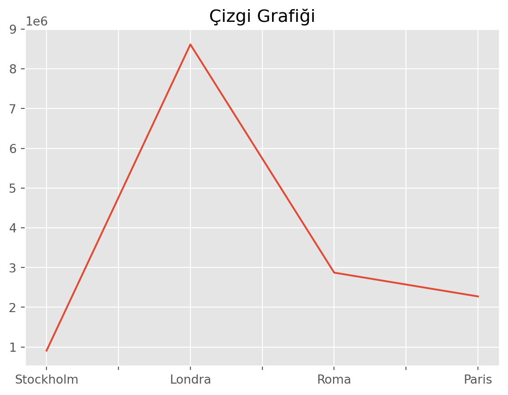
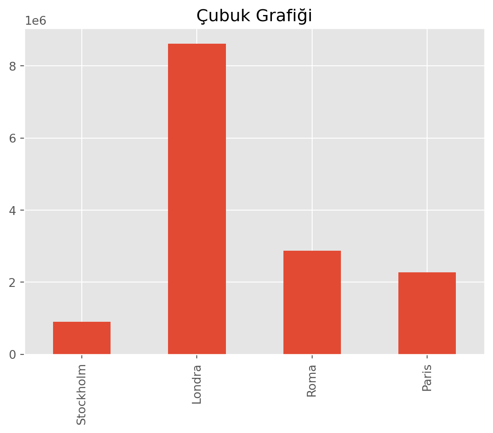
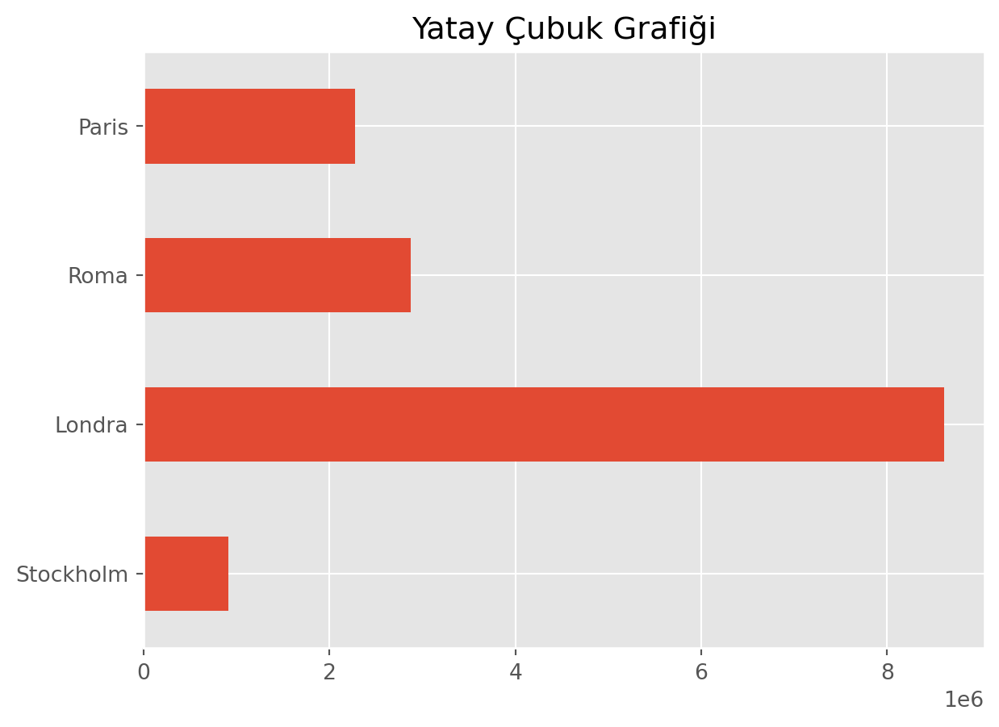
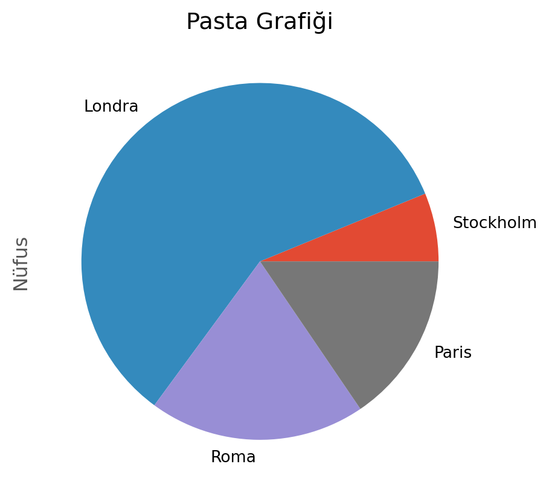
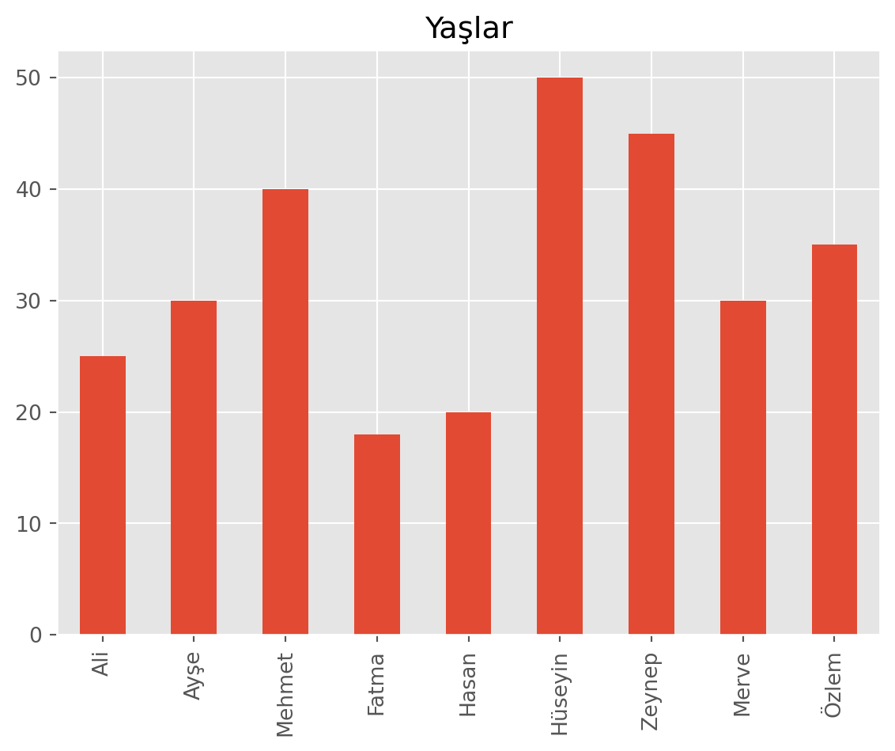
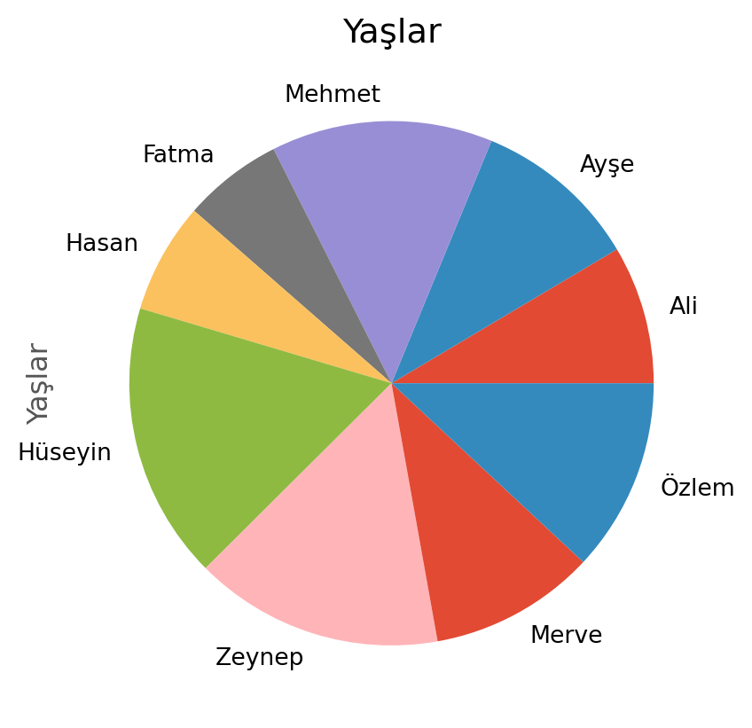

pandas - Giris
pandas Modülüne Giriş
Pandas, Python programlama dilini kullanarak veri manüpilasyonu ve analizi için kullanılan bir kütüphanedir. Tıpkı numpy paketi gibi veri işleme konulardı önemli bir yer teşkil ederi.
Web sitesi: pandas.pydata.org
Dökümantasyon: pandas.pydata.org
Pandas, tıpkı numpy arrayleri gibi veri yapılarını kullanarak veri analizi yapmamızı sağlayan bir Python modülüdür. Arka planda numpy, matplotlib ve scipy gibi modülleri kullanır.
Pandas modülünü kullanabilmek için öncelikle modülü içe aktarmamız gerekiyor. Bu modülün yanında genellikle numpy ve matplotlib modüllerini de içe aktarıyoruz.
Seriler
Tıpkı numpy paketindeki bir boyutlu diziler gibi pandas paketinde de bir boyutlu seriler vardır. Bu seriler aşağıdaki gibi oluşturulur.
import pandas as pd
## Numpy Array
#arr1= np.array([1,2,3,4])
#print(arr1)
# Pandas Serisi
s=pd.Series([909976, 8615246, 2872086, 2273305])
print(s)0 909976
1 8615246
2 2872086
3 2273305
dtype: int64numpy paketindeki dizilerdeki gibi serilerde de dtype parametresi ile veri tipi belirtilir. dtype parametresi belirtilmezse veri tipi otomatik olarak belirlenir. Yukarıdaki örnekte dtype parametresi belirtilmediği için veri tipi otomatik olarak int64 olarak belirlenmiştir.
numpy dizileri ile pandas serileri arasındaki en büyük fark indekslemedir. s değişkenini ekrana yazdırdığımızda değerlerin sol tarafında sıfırdan başlayan etiketler (index) görüyoruz. Bu etiketler serilerdeki değerlerin sırasını gösterir.
Etiketlerin ne olduğunda erişmek için .index komutu kullanılır.
import pandas as pd
s=pd.Series([909976, 8615246, 2872086, 2273305])
print(f"s.index => {s.index}")
print(f"list(s.index) => {list(s.index)}")
# Python listelerinde de benzer durum vardır.
print(f"range(4) => {range(4)}")
print(f"list(range(4)) => {list(range(4))}")s.index => RangeIndex(start=0, stop=4, step=1)
list(s.index) => [0, 1, 2, 3]
range(4) => range(0, 4)
list(range(4)) => [0, 1, 2, 3]Serilerin etiketsiz, yani ham değerlerine de .values komutu ile erişilir.
import pandas as pd
s=pd.Series([909976, 8615246, 2872086, 2273305])
# Değerleri
print(s.values)
# Değişkene ata
liste=s.values
print(liste[2])
# Kısa versiyonu
print(s.values[2])[ 909976 8615246 2872086 2273305]
2872086
2872086Etiketleme yöntemi ile veriye erişmek faydalıdır. Örneğin s ile tanımladığımız değerler Stockholm, Londra, Roma ve Paris’in nüfusları olsun. Bu durumda etiketleri de şehir isimlerine değiştirebiliriz. Aynı zamanda serinin ismini de belirleyebiliriz.
import pandas as pd
s=pd.Series([909976, 8615246, 2872086, 2273305])
# Etiketleri değiştirme
s.index=['Stockholm', 'Londra', 'Roma', 'Paris']
print(s)
print("---o---o---")
s.name='Nüfus'
print(s)Stockholm 909976
Londra 8615246
Roma 2872086
Paris 2273305
dtype: int64
---o---o---
Stockholm 909976
Londra 8615246
Roma 2872086
Paris 2273305
Name: Nüfus, dtype: int64Tüm bu işlemleri tek tek yapmaktansa seriyi tanımlarken de yapabiliriz.
Veriye Erişmek
Tıpkı numpy dizilerinde veya matrislerinde olduğu gibi pandas serilerinde de bazı verilere erişmek gerekecektir. Bunun için çeşitli yöntemler vardır.
Önce yukarıda tanımladığımız s serisinin “Londra” etiketine sahip değerine erişelim.
import pandas as pd
s=pd.Series([909976, 8615246, 2872086, 2273305], index=['Stockholm', 'Londra', 'Roma', 'Paris'], name='Nüfus')
# İki çeşit erişim
print(f"s['Londra'] => {s['Londra']}")
print(f"s.Londra => {s.Londra}")s['Londra'] => 8615246
s.Londra => 8615246Görüldüğü üzere etiketler üzerinden iki farklı şekilde veriye erişebiliyoruz. Benzer şekilde hem “Londra” hem de “Roma” etiketlerine sahip değerlere erişmek için aşağıdaki gibi bir kod yazabiliriz. Sonucun yeni bir seri olduğuna dikkat edin.
import pandas as pd
s=pd.Series([909976, 8615246, 2872086, 2273305], index=['Stockholm', 'Londra', 'Roma', 'Paris'], name='Nüfus')
# Londra, Roma etiketlerine sahip değerler
# Sonuç yeni bir SERİ olacaktır.
print(f"s[['Londra', 'Roma']] => \n{s[['Londra', 'Roma']]}")
print("---o---o---")s[['Londra', 'Roma']] =>
Londra 8615246
Roma 2872086
Name: Nüfus, dtype: int64
---o---o---pandas paketi temel olarak istatistiksel işlemler yapmaya uygun olduğu için tanımlanan serilerde bazı istatistiksel işlemler yapılabilir.
import pandas as pd
s=pd.Series([909976, 8615246, 2872086, 2273305], index=['Stockholm', 'Londra', 'Roma', 'Paris'], name='Nüfus')
# Medyan (Ortanca)
print(f"Medyan: {s.median()}")
# Ortalama
print(f"Ortalama: {s.mean()}")
# Standart Sapma
print(f"Standart Sapma: {s.std()}")
# Min-Max
print(f"Min: {s.min()}")
print(f"Max: {s.max()}")
print("---o---o---")
# Tanımlı istatistiksel değerler
print(s.describe())Medyan: 2572695.5
Ortalama: 3667653.25
Standart Sapma: 3399048.5005155364
Min: 909976
Max: 8615246
---o---o---
count 4.000000e+00
mean 3.667653e+06
std 3.399049e+06
min 9.099760e+05
25% 1.932473e+06
50% 2.572696e+06
75% 4.307876e+06
max 8.615246e+06
Name: Nüfus, dtype: float64Serileri çizdimrk için plot fonksiyonu kullanılır. Plot fonksiyonunu eskiden yaptığımız gibi plt.plot() şeklinde de kullanabiliriz veya s.plot() şeklinde de kullanabiliriz. s.plot() şeklinde kullanılması, pandas paketinin içerisinde matplotlib paketinin bulunduğu anlamına gelir.
import pandas as pd
import matplotlib.pyplot as plt
import matplotlib as mpl
mpl.style.use('ggplot') # İstatistiksel grafikleri daha estektik hale getirir.
s=pd.Series([909976, 8615246, 2872086, 2273305], index=['Stockholm', 'Londra', 'Roma', 'Paris'], name='Nüfus')
# Çiz
# # 1 satır 4 sütunluk bir grafik
# fig, axes= plt.subplots(1,4)
# # s verisini çizdir
# s.plot(ax=axes[0], kind='line', title='Çizgi Grafiği')
# s.plot(ax=axes[1], kind='bar', title='Çubuk Grafiği')
# s.plot(ax=axes[2], kind='barh', title='Yatay Çubuk Grafiği')
# s.plot(ax=axes[3], kind='pie', title='Pasta Grafiği')
s.plot(kind='line', title='Çizgi Grafiği')
plt.show()
plt.close()
s.plot(kind='bar', title='Çubuk Grafiği')
plt.show()
plt.close()
s.plot(kind='barh', title='Yatay Çubuk Grafiği')
plt.show()
plt.close()
s.plot(kind='pie', title='Pasta Grafiği')
plt.show()
plt.close()



Alıştırma 1
- Aşağıdaki verileri içeren bir
pandasserisi oluşturun.
| İsim | Yaş |
|---|---|
| Ali | 25 |
| Ayşe | 30 |
| Mehmet | 40 |
| Fatma | 35 |
| Hasan | 20 |
| Hüseyin | 50 |
| Zeynep | 45 |
| Merve | 30 |
| Özlem | 35 |
- Bu serinin ismini “Yaşlar” olarak ayarlayın.
- Bu serideki Fatma’nın yaşını ekrana yazdırın.
- Bu serideki Fatma’nın, Hasan’ın ve Zeynep’in yaşlarını ekrana yazdırın.
- Bu serideki Fatma’nın yaşını 18 yapın.
- Bu seri’deki en yaşlı kişinin yaşını ekrana yazdırın.
- Bu seri’deki en genç kişinin yaşını ekrana yazdırın.
- Yaşların ortalamasını ekrana yazdırın.
- Bu seriyi dikey bar ve pasta grafiği olarak çizdirin.
Çözüm
import pandas as pd
import matplotlib.pyplot as plt
import matplotlib as mpl
mpl.style.use('ggplot')
# 1. Soru
s=pd.Series([25, 30, 40, 35, 20, 50, 45, 30, 35], index=['Ali', 'Ayşe', 'Mehmet', 'Fatma', 'Hasan', 'Hüseyin', 'Zeynep', 'Merve', 'Özlem'], name='Yaşlar')
# s=pd.Series([25, 30, 40, 35, 20, 50, 45, 30, 35])
# s.index=['Ali', 'Ayşe', 'Mehmet', 'Fatma', 'Hasan', 'Hüseyin', 'Zeynep', 'Merve', 'Özlem']
# 2. Soru
s.name='Yaşlar'
# 3. Soru
print(f"Fatma'nın yaşı: {s['Fatma']}")
# print(f"Fatma'nın yaşı: {s.Fatma}")
# 4. Soru
print(f"Fatma, Hasan ve Zeynep'in yaşları: \n{s[['Fatma', 'Hasan', 'Zeynep']]}")
# 5. Soru
s['Fatma']=18
# s.Fatma=18
# 6. Soru
print(f"En yaşlı kişi: {s.max()}")
# 7. Soru
print(f"En genç kişi: {s.min()}")
# 8. Soru
print(f"Ortalama: {s.mean()}")
# 9. Soru
s.plot(kind='bar', title='Yaşlar')
plt.show()
plt.close()
s.plot(kind='pie', title='Yaşlar')
plt.show()
plt.close()Fatma'nın yaşı: 35
Fatma, Hasan ve Zeynep'in yaşları:
Fatma 35
Hasan 20
Zeynep 45
Name: Yaşlar, dtype: int64
En yaşlı kişi: 50
En genç kişi: 18
Ortalama: 32.55555555555556

Veri Çerçevesi (DataFrame)
Serileri tek boyutlu diziler olarak düşünebiliriz. Yukarıda verdiğimiz örnekte, s serisi sadece şehirlerin nüfus bilgisini içeriyordu. pandas paketinde verileri iki boyutlu bir yapıda tutan veri çerçeveleri (data frame) vardır.Veri çerçevelerini aşağıdaki gibi oluşturabiliriz.
import pandas as pd
# Data Frame
df= pd.DataFrame([\
[909976, "İsveç"]\
, [8615246, "Birleşik Krallık"]\
, [2872086, "İtalya"]\
, [2273305, "Fransa"]]
, index=['Stockholm', 'Londra', 'Roma', 'Paris'], columns=['Nüfus', 'Ülke'])
print(df) Nüfus Ülke
Stockholm 909976 İsveç
Londra 8615246 Birleşik Krallık
Roma 2872086 İtalya
Paris 2273305 FransaSerideki nüfus bilgisine ek olarak ülke verisini de kaydettik. Yatayda (satır) eklenen veri etiket, index bazında ilerlerken düşeyde (sütun) eklenen veri sütun bazında ilerlemektedir. Sütunlar columns- olarak isimlendirilmektedir. Eğer herhangi bir adlandırma yapılmazsa, tıpkı etiketlerde olduğu gibi otomatik olarak sıfırdan başlayan sıralı sayılar atanır.
Sütunlara erişmek için aşağıdaki gibi bir kod yazılır.
import pandas as pd
# Data Frame
df= pd.DataFrame([\
[909976, "İsveç"]\
, [8615246, "Birleşik Krallık"]\
, [2872086, "İtalya"]\
, [2273305, "Fransa"]]
, index=['Stockholm', 'Londra', 'Roma', 'Paris'], columns=['Nüfus', 'Ülke'])
print(df.columns)
# Sütunlardaki sadece nüfus elemanına erişmek için
print(df.columns[0])Index(['Nüfus', 'Ülke'], dtype='object')
NüfusDataframe’leri python sözlük (dictionary) şeklinde de tanımlayabiliriz.
import pandas as pd
# Alternatif Tanımlama
df2= pd.DataFrame({
"Nüfus": [909976, 8615246, 2872086, 2273305],
"Ülke": ["İsveç", "Birleşik Krallık", "İtalya", "Fransa"]},
index=['Stockholm', 'Londra', 'Roma', 'Paris'])
print(df2) Nüfus Ülke
Stockholm 909976 İsveç
Londra 8615246 Birleşik Krallık
Roma 2872086 İtalya
Paris 2273305 FransaVeriye Erişim
Serilerde olduğu gibi dataframe’lerde de verilere erişmek gerekecektir. Bunun için çeşitli yöntemler vardır.
DataFrame’lerde veriye ulaşmak için kullanılan köşeli parantez yöntemi sadece sütunlar için geçerlidir.
Türkçe karakter kullanarak tanımlanan sütunlarda nokta kullanarak erişim sağlayamayabilirsiniz. Bunun için köşeli parantez ve tırnak kullanmanız gerekir.
import pandas as pd
# Data Frame
df= pd.DataFrame([\
[909976, "İsveç"]\
, [8615246, "Birleşik Krallık"]\
, [2872086, "İtalya"]\
, [2273305, "Fransa"]]
, index=['Stockholm', 'Londra', 'Roma', 'Paris'], columns=['Nüfus', 'Ülke'])
# Nüfus sütununa erişim
print(df["Nüfus"])
print("----------------")
#! Türkçe karakter kullandığımızda hata vermedi !?
print(df.Nüfus)
print("----------------")
#print(df["Roma"]) #! Hata verirStockholm 909976
Londra 8615246
Roma 2872086
Paris 2273305
Name: Nüfus, dtype: int64
----------------
Stockholm 909976
Londra 8615246
Roma 2872086
Paris 2273305
Name: Nüfus, dtype: int64
----------------Serilerde ["Satır"] şeklinde erişim yaparken dataframe’lerde ["Sütun"] şeklinde erişim yapılır.
import pandas as pd
# Seri
s=pd.Series([909976, 8615246, 2872086, 2273305], index=['Stockholm', 'Londra', 'Roma', 'Paris'], name='Nüfus')
# Data Frame
df= pd.DataFrame([\
[909976, "İsveç"]\
, [8615246, "Birleşik Krallık"]\
, [2872086, "İtalya"]\
, [2273305, "Fransa"]]
, index=['Stockholm', 'Londra', 'Roma', 'Paris'], columns=['Nüfus', 'Ülke'])
# Seride "Londra" etiketine sahip değer
print(f"s['Londra'] => {s['Londra']}")
print("---o---o---o---")
# Dataframe'de "Nüfus" sütununa sahip sütun
print(f"df['Nüfus'] => \n{df['Nüfus']}")s['Londra'] => 8615246
---o---o---o---
df['Nüfus'] =>
Stockholm 909976
Londra 8615246
Roma 2872086
Paris 2273305
Name: Nüfus, dtype: int64Sütunlara köşeli parantez veya nokta kullanarak erişebildik. Satırlara dar .loc[] yöntemi ile erişebiliriz. loc yöntemi ile erişmek istediğimizde belirlediğimiz satır(lar)daki tüm sütun değerlerini alırız.
Eğer belirlediğimiz bir satırın tüm sütun değerlerini almak istemiyorsak, sütunları da belirtmemiz gerekir. Bunun için loc[Satır(lar), Sütun(lar)] şeklinde bir kullanım yaparız.
import pandas as pd
# Data Frame
df= pd.DataFrame([\
[909976, "İsveç"]\
, [8615246, "Birleşik Krallık"]\
, [2872086, "İtalya"]\
, [2273305, "Fransa"]]
, index=['Stockholm', 'Londra', 'Roma', 'Paris'], columns=['Nüfus', 'Ülke'])
# Data Frame Yazdır
print(f"df => \n{df}")
print("---o---o---o---")
print(f"df.loc['Roma'] => \n{df.loc['Roma']}")
print("---o---o---o---")
print(f"df.loc[['Roma', 'Paris']] => \n{df.loc[['Roma', 'Paris']]}")
print("---o---o---o---")
print(f"df.loc[['Roma', 'Paris'], 'Nüfus'] => \n{df.loc[['Roma', 'Paris'], 'Nüfus']}")df =>
Nüfus Ülke
Stockholm 909976 İsveç
Londra 8615246 Birleşik Krallık
Roma 2872086 İtalya
Paris 2273305 Fransa
---o---o---o---
df.loc['Roma'] =>
Nüfus 2872086
Ülke İtalya
Name: Roma, dtype: object
---o---o---o---
df.loc[['Roma', 'Paris']] =>
Nüfus Ülke
Roma 2872086 İtalya
Paris 2273305 Fransa
---o---o---o---
df.loc[['Roma', 'Paris'], 'Nüfus'] =>
Roma 2872086
Paris 2273305
Name: Nüfus, dtype: int64Alıştırma 2
- Aşağıdaki verileri içeren bir
pandasdataframe (veri çerçevesi) oluşturun.
| İsim | Yaş | Meslek | Maaş | Cinsiyet |
|---|---|---|---|---|
| Ali | 25 | Öğrenci | 1000 | Erkek |
| Ayşe | 30 | Öğretmen | 5000 | Kadın |
| Mehmet | 40 | Mühendis | 8000 | Erkek |
| Fatma | 35 | Doktor | 10000 | Kadın |
| Hasan | 20 | Öğrenci | 1000 | Erkek |
| Hüseyin | 50 | Mühendis | 8000 | Erkek |
| Zeynep | 45 | Doktor | 10000 | Kadın |
| Merve | 30 | Öğretmen | 5000 | Kadın |
- Bu veri çerçevesinin ismini “Personel” olarak ayarlayın.
- Bu veri çerçevesindeki “Meslek” sütununu ekrana yazdırın.
- Bu veri çerçevesindeki “Meslek” ve “Maaş” sütunlarını ekrana yazdırın.
- Bu veri çerçevesindeki “Meslek” ve “Maaş” sütunlarını “Meslekler” ve “Maaşlar” olarak ayarlayın.
- Bu veri çerçevesindeki “Ali”’nin tüm bilgilerini ekrana yazdırın.
- Bu veri çerçevesindeki “Ali”, “Ayşe” ve “Mehmet”’in tüm bilgilerini ekrana yazdırın.
- Bu veri çerçevesindeki “Ali”’nin “Meslek” ve “Maaş” bilgilerini ekrana yazdırın.
- Bu veri çerçevesindeki “Ali”, “Ayşe” ve “Mehmet”’in “Yaş” ve “Cinsiyet” bilgilerini ekrana yazdırın.
Çözüm
import pandas as pd
# 1. Soru
df= pd.DataFrame({
"Yaş": [25, 30, 40, 35, 20, 50, 45, 30],
"Meslek": ["Öğrenci", "Öğretmen", "Mühendis", "Doktor", "Öğrenci", "Mühendis", "Doktor", "Öğretmen"],
"Maaş": [1000, 5000, 8000, 10000, 1000, 8000, 10000, 5000],
"Cinsiyet": ["Erkek", "Kadın", "Erkek", "Kadın", "Erkek", "Erkek", "Kadın", "Kadın"]
},
index=['Ali', 'Ayşe', 'Mehmet', 'Fatma', 'Hasan', 'Hüseyin', 'Zeynep', 'Merve'])
# 2. Soru
df.name='Personel'
print(f"df.name => {df.name}")
print("---o---o---o---")
# 3. Soru
print(f"df['Meslek'] => \n{df['Meslek']}")
print("---o---o---o---")
# 4. Soru
print(f"df[['Meslek', 'Maaş']] => \n{df[['Meslek', 'Maaş']]}")
print("---o---o---o---")
# 5. Soru
df=df.rename(columns= {'Meslek' : 'Meslekler'})
df=df.rename(columns= {'Maaş' : 'Maaşlar'})
print(f"df.columns => {df.columns}")
print("---o---o---o---")
# 6. Soru
print(f"df.loc['Ali'] => \n{df.loc['Ali']}")
print("---o---o---o---")
# 7. Soru
print(f"df.loc[['Ali', 'Ayşe', 'Mehmet']] => \n{df.loc[['Ali', 'Ayşe', 'Mehmet']]}")
print("---o---o---o---")
# 8. Soru
print(f"df.loc['Ali', ['Meslekler', 'Maaşlar']] => \n{df.loc['Ali', ['Meslekler', 'Maaşlar']]}")
print("---o---o---o---")
# 9. Soru
print(f"df.loc[['Ali', 'Ayşe', 'Mehmet'], ['Yaş', 'Cinsiyet']] => \n{df.loc[['Ali', 'Ayşe', 'Mehmet'], ['Yaş', 'Cinsiyet']]}")
print("---o---o---o---")df.name => Personel
---o---o---o---
df['Meslek'] =>
Ali Öğrenci
Ayşe Öğretmen
Mehmet Mühendis
Fatma Doktor
Hasan Öğrenci
Hüseyin Mühendis
Zeynep Doktor
Merve Öğretmen
Name: Meslek, dtype: object
---o---o---o---
df[['Meslek', 'Maaş']] =>
Meslek Maaş
Ali Öğrenci 1000
Ayşe Öğretmen 5000
Mehmet Mühendis 8000
Fatma Doktor 10000
Hasan Öğrenci 1000
Hüseyin Mühendis 8000
Zeynep Doktor 10000
Merve Öğretmen 5000
---o---o---o---
df.columns => Index(['Yaş', 'Meslekler', 'Maaşlar', 'Cinsiyet'], dtype='object')
---o---o---o---
df.loc['Ali'] =>
Yaş 25
Meslekler Öğrenci
Maaşlar 1000
Cinsiyet Erkek
Name: Ali, dtype: object
---o---o---o---
df.loc[['Ali', 'Ayşe', 'Mehmet']] =>
Yaş Meslekler Maaşlar Cinsiyet
Ali 25 Öğrenci 1000 Erkek
Ayşe 30 Öğretmen 5000 Kadın
Mehmet 40 Mühendis 8000 Erkek
---o---o---o---
df.loc['Ali', ['Meslekler', 'Maaşlar']] =>
Meslekler Öğrenci
Maaşlar 1000
Name: Ali, dtype: object
---o---o---o---
df.loc[['Ali', 'Ayşe', 'Mehmet'], ['Yaş', 'Cinsiyet']] =>
Yaş Cinsiyet
Ali 25 Erkek
Ayşe 30 Kadın
Mehmet 40 Erkek
---o---o---o---Problemler
Problem 1
- Github reposunda bulunan
veri-analizi-european_cities.csvdosyasınına bu linkten erişin. Bu dosyayı okuyarak birpandasdataframe (veri çerçevesi) oluşturun. Bu datayı okumak içinpd.read_csv('european_cities.csv')fonksiyonunu kullanabilirsiniz. - [1] referansındaki
european_cities.csvdosyasını okuyarak farklı isimde birpandasdataframe (veri çerçevesi) oluşturun. .info()fonksiyonunu kullanarak içeriği hakkında bilgi edinin.
Kaynaklar
- Numerical Python: Scientific Computing and Data, Science Applications with Numpy, SciPy and Matplotlib, Robert Johansson, Apress, İkinci Basım, 2019, syf 406
- VS Code ile csv dosyası görüntüleme: Excel Viewer